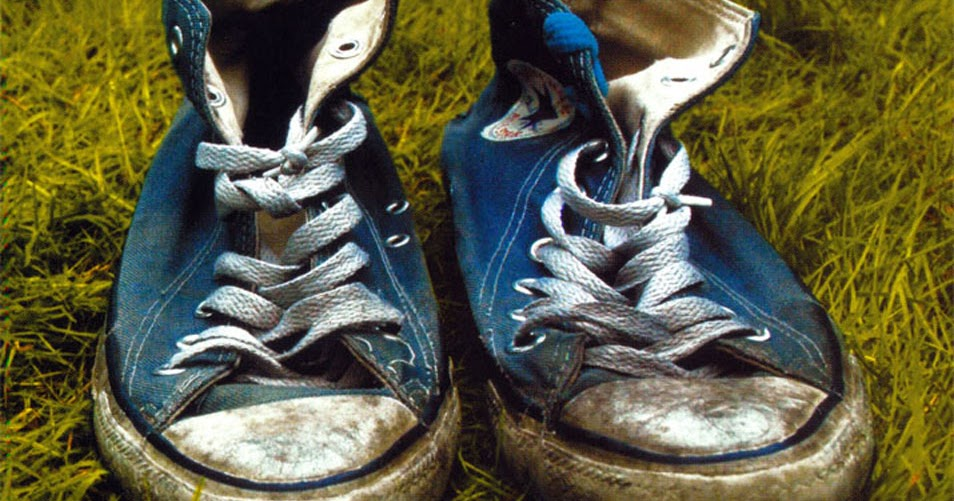

Fue un grupo español de música hardcore punk, aunque sus miembros consideran que algunas de sus canciones pertenecen más al género power pop.1 Fue creado en 1994 por Dani Martín e Iván Ganchegui (quien abandonaría el grupo en 2002), y años después terminarían por ser cinco miembros. Influidos principalmente por otros grupos españoles de la década de 1980 y con cinco álbumes de estudio, El Canto del Loco ha conseguido vender más de un millón de copias en el mercado,2 convirtiéndose en uno de los grupos musicales más importantes del panorama español en su momento.345 En febrero del 2010 la banda anunció su separación, ya que los miembros del grupo querían seguir su carrera individualmente.